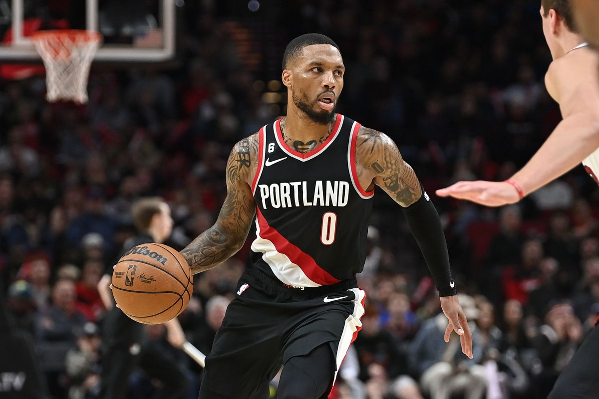
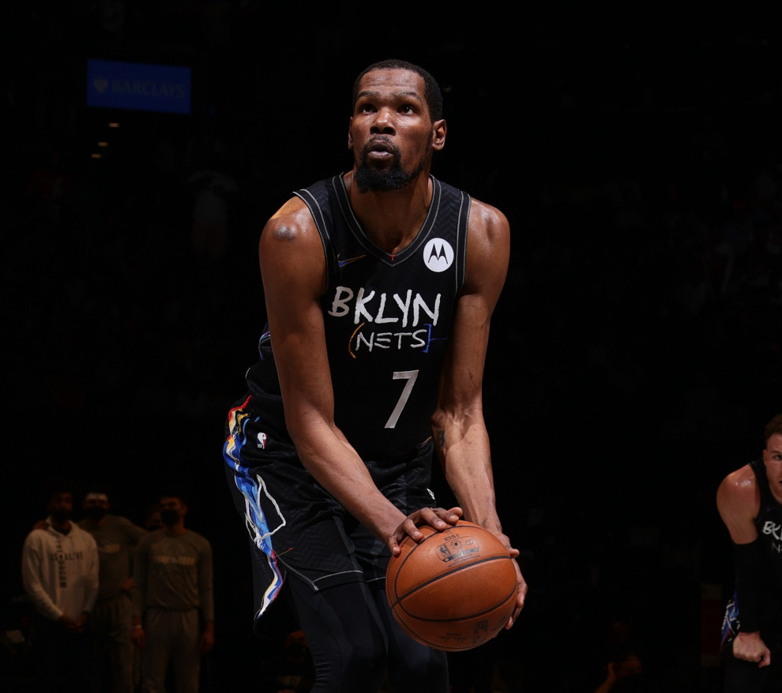
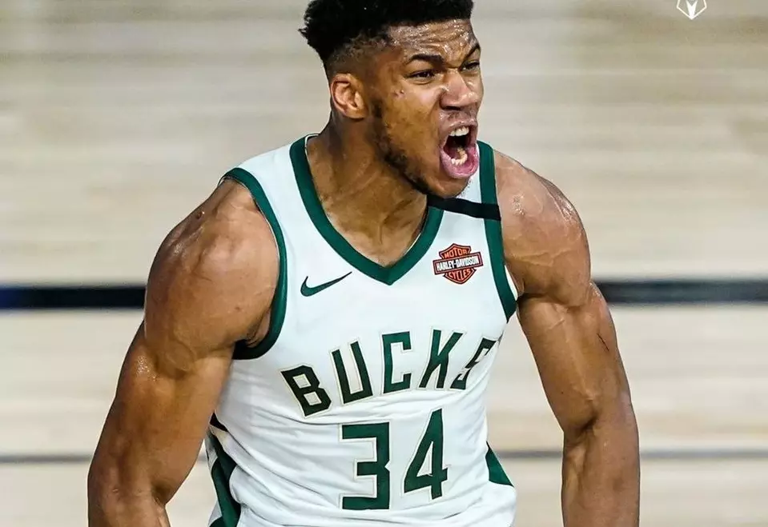

DeAndre Jordan, Chris Paul e Blake Griffin
NBA (National Basketball Association)
Bom aqui já temos uma dificuldade pois não sou torcedor de um time específico, tenho carinho por alguns
Los Angeles Clippers
Entre eles o L.A Clippers, não foi o primeiro mas hoje é para o qual eu mais torço. Comecei a torcer por eles na famosa era do “Lob City” que encantou o mundo do basquete com jogadas incríveis.
Boston Celtics
Além de ser verde e branco como meu Palmeiras, é um dos times mais tradicionais da liga e sempre é competitivo além da sua história grandiosa é quase impossível não se encantar por esse time.

Paul Pierce, Kevin Garnett e Ray Allen
Chicago Bulls
Os Bulls são o time do maior de todos Michael Jordan, mas não foi por ele que eu comecei a torcer pelo Bulls. Mas sim por um cara incrível chamado Derrick Rose, que chegou na liga como um novo MJ. Mas por conta de uma lesão gravíssima infelizmente ele não foi mais o mesmo jogador, porem ele me encantou tanto que torço o time até hj e claro por ele independente do time que ele esteja.
Joaquim Noah, Luol Deng, Derrick Rose e Carlos Boozer
Jogadores Favoritos
E claro como amante do esporte torço para jogadores que me encantam e acabo torcendo um pouco por onde eles estiverem. Como O meu favorito Damian Lillard lenda do Portland Trail Blazers, Kevin Durant que é simplesmente fantástico e Giannis Antetokounmpo que é extremamente dominante.
-

Damian Lillard
-

Kevin Durant
-

Giannis Antetokounmpo